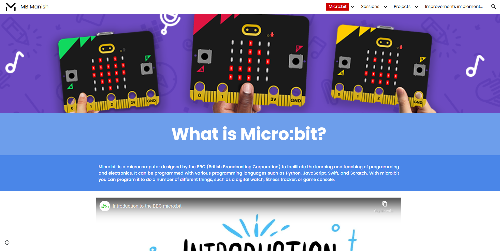

This project examines the impact of integrating computational thinking through the micro:bit on students in early secondary education. It highlights how these skills, fostered through STEAM methodologies, enhance problem-solving abilities and prepare students for future job prospects across various disciplines.

I held a seminar on this project for a group of professors in the education field who were seeking to incorporate the micro:bit microcomputer into their classrooms.
🔍 For a detailed view of the poster, click here.
Have a look 👀 at the website I created for students to access their micro:bit activities and resources. It includes information about the micro:bit, a how-to guide, and detailed instructions on recreating the projects that the students developed in the classroom during this research study.
Currently, the website is in Spanish because it was designed for Spanish-speaking students. However, if you'd like to view the content in your preferred language to better understand all the activities with the micro:bit, you can simply right-click and select the "Translate" option.
Use the password "microbit" to log in.
Award-Winning Micro:bit Project Aligned with the 17 Development Goals

This Micro:bit project, which enhances critical thinking and creativity while educating young students about the Sustainable Development Goals, has earned notable recognition:
It was awarded by Carlos III University of Madrid. Explore the contest details here.
The project was published in the prestigious scientific journal "JENUI" by the University of La Coruña.
It has also been recognized by the University of Alicante in Valencia for its contribution to the field.
Contributing to 7 of the 17 Development Goals

Details on how this research paper and the student's class projects contribute to the Sustainable Development Goals are available in the uploaded PDF paper above under section "6. Contribution to the Development Sustainable Goals" or on the website, specifically in the Class Sessions or Projects sections.
Reminder: the password for the website is "microbit"